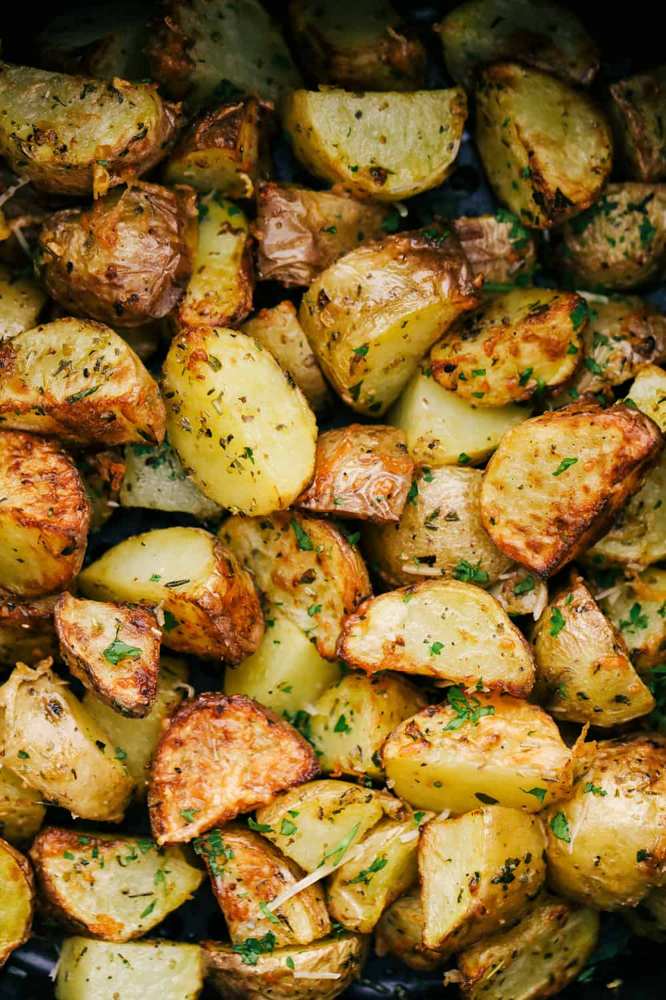

Fried potatoes

Perfectly cooked but crispy potatoes for an easy meal!
Ingredients
- Oil of your choice (I use olive oil)
- Potatoes
- Salt
- Ground black pepper
- Paprika
- Rosemary or Cilantro
Steps
- Get pot of water to boil
- Dump potatoes and let them cook for 8 minutes
- Take them out and let them air dry on plate
- Heat up oil in pan
- Put potatoes in pan let them brown
- Sprinkle salt, ground black pepper, and paprika
- Brown all sides as much as you can
- Finish with rosemary or cilantro
- Done
Return to menu